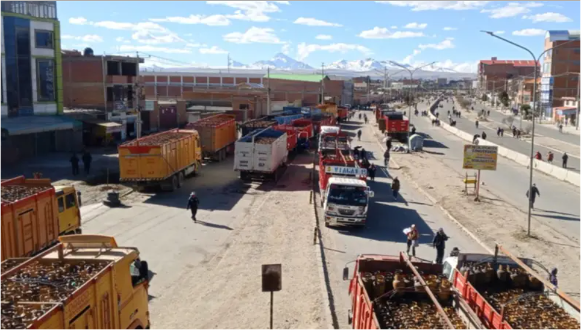

Carreteras cortadas: El alto precio de llegar a la Sede de Gobierno
Análisis de la situación vial metropolitana (2025-2026)
Debido a su geografía montañosa, la ciudad de La Paz y El Alto dependen críticamente de su red vial terrestre (la Autopista, avenidas troncales y carreteras interdepartamentales). Sin embargo, los constantes conflictos sociales en puntos clave como Senkata o Caracollo, sumados a la crisis de carburantes, han convertido el simple acto de transportar carga o pasajeros en una odisea altamente costosa.
¿Cómo afecta esto al bolsillo del transportista y pasajero? Cuando un camión que lleva productos a La Paz se topa con un bloqueo, no puede simplemente detenerse. Tiene que tomar un desvío por caminos de tierra secundarios. Este desvío suma decenas de kilómetros al viaje. Más kilómetros significan más diésel quemado, un desgaste destructivo para el vehículo en caminos no pavimentados y, finalmente, un aumento directo en el costo del flete o del pasaje interprovincial.
"Por los bloqueos tuvimos que ir por Achocalla para llegar a la zona Sur; el camino está deshecho. Gasté más gasolina en el desvío que en toda mi ruta normal de la mañana. Los repuestos están carísimos, si no subimos el pasaje, trabajamos a pérdida total." - Testimonio de un conductor de minibús en La Paz

Micro-impacto urbano
No solo afecta viajes largos. En la ciudad de La Paz, si tu ruta por el centro está bloqueada (ej. El Prado o la Pérez), tomar un radiotaxi por vías alternas más largas incrementa tu gasto de transporte de 15 Bs a 30 Bs en un solo día.